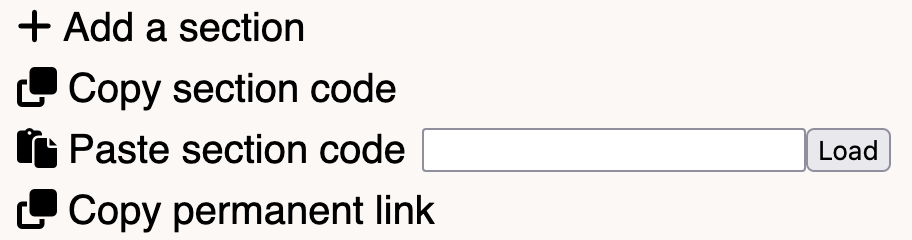

A simple web application to aid in transcribing music.
Transcribe is a free cross-platform web app for slowing down and looping sections of an audio file. You can upload your own audio files or choose from many existing ones in the song library.
Here are a couple notes:
If you have any questions not answered by this help page or want further clarification, feel free to send me a question on the project page.
If you're wondering how to transcribe, JazzAdvice.com is an excellent resource. This post, for example, has a wealth of information and links to many others.
To upload a file, simply click the button indicated at the top of the screen. When you upload a file, the app will generate a fresh workspace, so make sure to save your previous work or open the app in a new tab.
The workspace includes the player and the section editor. This is a fancy colorful diagram I spent too long making:
There are three buttons in the audio player. The left arrow button goes to the beginning of the audio; the right arrow goes to the end; and the play button starts and stops it.
When in a section, the start- and end-jumping buttons will only go to the bounds specified. For example, if the starting location is at 1 minute and 30 seconds, pressing the start-jumping button will move the playhead to the 1 minute and 30 second mark.
The section editor menu has three buttons:
The add a section button creates a new section at the bottom of the page.
The copy section code button copies a code that represents the sections you have made.
The paste section code button paste into the text box. The small load to the right will restore your progress based on what you pasted in.
The copy permanent link button copies a link you can use to access your progress later. This may be more convienient than copying the section code and pasting it later. Note: the links may become very long for complex workspaces.
Using the section editor menu, you can create new sections. Once you have created a section, you can customize it.
Press the trash button at the top-right of a section to irreversibly delete a section.
As long as you keep the tab open, the app will automatically save your progress. If you accidently close the tab, look in your browser history and click on the most recent link to the website. You can alo manually save your progress by copying the section code or a special link.
Clicking the copy section code button copies a "section code" to your clipboard. This bizarre-looking string of letters is what encodes your progress.
This section code does NOT have your audio file, so you must keep that as well. I keep my audio files in a cloud provider like Google Drive.
The color scheme of this website is abysmal, and I apologize in advance for that.
This section is only for advanced users.
The sections are stored as a JSON object like so:
{
"filename" : Name of file,
"fileModified" : JS timestamp when file was last modified,
"lastID" : Number greater than or equal to any other section id,
"currentTime" : The position of the player,
"sections" : [
{
"id" : Unique id,
"name" : Name of section,
"start" : Start time in seconds,
"end" : End time in seconds,
"speed" : Speed where 1 means original,
"loop" : Boolean
}
]
}
You can reorder the way the sections appear in the app by reordering the corresponding JSON objects in the sections array. I aim to make this a more approachable feature soon.
Please see ethanuppal.github.io/privacy.html, but the TL;DR is that I collect no information about you.
The app requires JavaScript, including app.js file and inline scripts in the index.html file, to function. All JavaScript files can be viewed on the GitHub. This page will also run JavaScript in the form of inline scripts, but it does not need to do so to function.